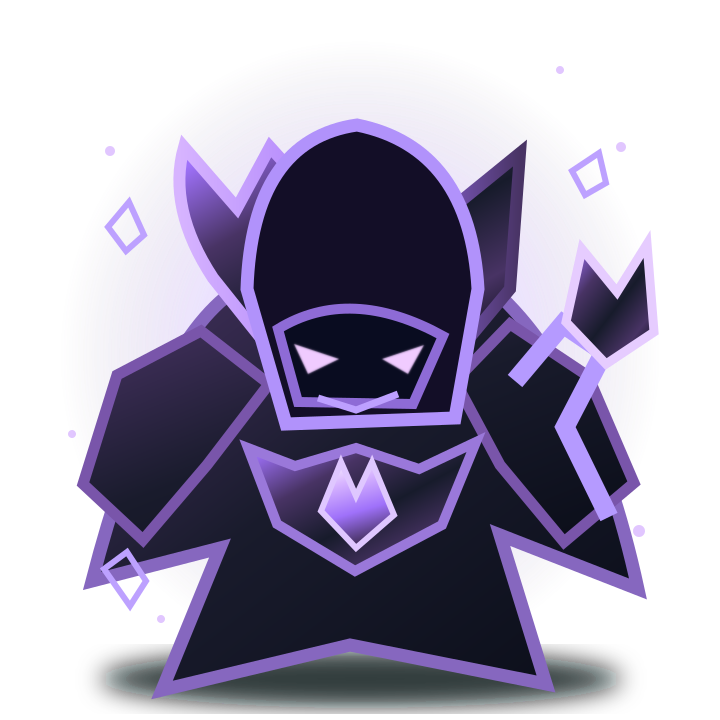

Deine geheime Expedition
Ein echtes Spielerprofil, zwei simulierte Verbündete. Keine weiteren Geräte notwendig. Hier verwendest du nur einen getrennten Testspielstand – echte Materialien, DOG-Freischaltungen und Weihnachtspreise bleiben unberührt.
Prüfe Anmeldung und Testzugang …
EINE EXPEDITION · DREI HELDEN
100 Tore bis zum letzten Wächter
Du spielst selbst. Nova und Titan übernehmen automatisch ihre Plätze, Bereitmeldungen und Reaktionsaufgaben.
🛡️ Die Heldengruppe
🗺️ Die Karte der 100 Tore
10 Kapitel · 10 WächterGoldene Felder sind Gruppenbosse, violette Felder Mini-Bosse. Wähle ein freigeschaltetes Tor, um es zu spielen.
🐉 Gemeinsamer Bosskampf

TOR 10
Der Aschewächter
Boss-Lebenspunkte
00:30
📦 Materialkisten testen
Simuliert eine verdiente Deal-Partie – ausschließlich für diesen Testspielstand.
Rohstofflager
⚒️ Test-Schmiede
Waffe, Rüstung und Fähigkeiten nach den tatsächlichen Event-Rezepten verbessern.
🧪 Erweiterte Teststeuerung
Für einen schnellen Boss-Test kannst du die Voraussetzungen für ein Kapitel vorbereiten. Das ersetzt nur den privaten Testfortschritt.
Nur mit privatem Zugang und dem zuerst freigeschalteten Spielerprofil nutzbar. Der Test kann jederzeit wieder geschlossen werden.